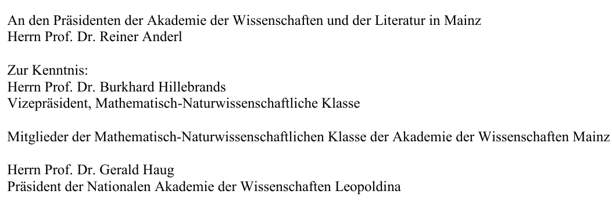
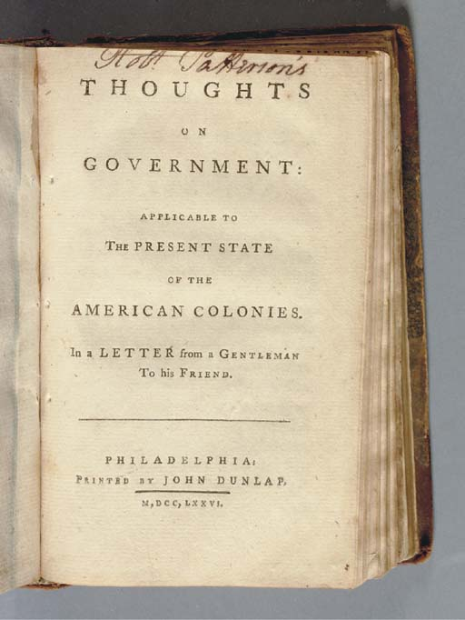
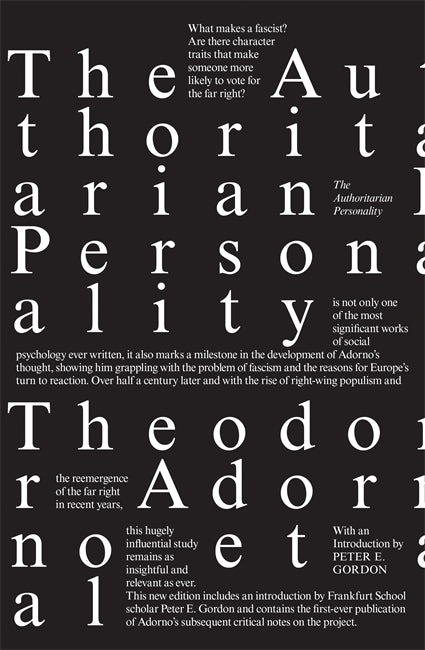

57:46 · 13 OPERE
La (ventottesima) dimensione pandemica.
Il filo del discorso
Il titolo immagina una dimensione nella quale non varrebbero più le regole del ragionamento ordinario. Dr Divago introduce il principio di non contraddizione attraverso Russell e Whitehead e la Metafisica di Aristotele, poi lo applica a notizie del periodo pandemico. Accosta le difficoltà economiche degli ospedali tedeschi alla pressione sulle terapie intensive e interpreta la vicinanza delle due notizie come un segno di incoerenza.
Leggi la sintesi completaRiduci la sintesi
La scheda conserva questo argomento distinguendolo dal riscontro: riduzione degli interventi programmati, perdite di entrate e sovraccarico di reparti e personale possono coesistere, perché riguardano aspetti differenti. La discussione passa alla variante del coronavirus individuata nel Regno Unito alla fine del 2020. Il relatore osserva che i virus mutano e critica una comunicazione che giudica allarmistica e paternalistica. Una mutazione ordinaria, però, non rende irrilevanti le proprietà di una variante specifica: già la documentazione del periodo esaminava una possibile maggiore trasmissibilità. Anche il confronto fra influenza, COVID e decessi successivi alla vaccinazione richiede di distinguere tempi, denominatori e nessi causali. Dr Divago stesso precisa di non sapere se i decessi che evoca siano stati causati dal vaccino. Questi passaggi sono letti come argomenti del contributo storico, senza trasformarli in indicazioni sanitarie. La critica della comunicazione conduce alla responsabilità di chi esercita una funzione culturale. Le dimissioni del geologo Thomas Aigner diventano per Dr Divago un esempio di dissenso etico; è però necessario precisare che Aigner lasciò l’Accademia di Magonza contestando un parere della Leopoldina. Il relatore cita altre figure del dibattito e ricorre al Giulio Cesare di Shakespeare per esprimere una condanna morale molto netta. La scheda tiene separate la documentazione dei gesti e delle opere dai giudizi rivolti alle persone. John Adams, Hobbes e uno studio di Luke Mayville aprono il tema del rapporto fra paura, ricchezza e governo. La influenza dei ricchi viene discussa anche come effetto della ammirazione che suscitano. Socrate e i racconti evangelici del giovane ricco e dei mercanti nel tempio offrono al relatore un criterio etico opposto alla sottomissione al potere. La democrazia viene proposta come pratica del discorso, oltre la sola conta dei voti. La conclusione ruota intorno a un intervento di Adorno del 1959 sul permanere di elementi nazionalsocialisti dentro le istituzioni democratiche. Dr Divago lo collega a Globke, Gehlen e alle continuità del dopoguerra, e ne ricava un avvertimento per il presente. I casi storici richiedono precisioni su ruoli, date e responsabilità; il confronto con le politiche pandemiche rimane una analogia politica del relatore. Il filo che unisce le sezioni è la richiesta di una cultura capace di esaminare gli argomenti, di documentare le proprie affermazioni e di non sostituire il confronto con la adesione a uno schieramento.
I libri nel discorso

Principia Mathematica
Note sul riferimento
Copertina del volume I: Cambridge University Press · copertina del volume I
Immagine autentica del volume I, titolo e autori leggibili. La voce bibliografica comprende l’opera in tre volumi, ma la fotografia non mostra un cofanetto completo. Non si assegna alla singol’immagine l’ISBN dell’insieme o una ristampa non accertata.
Principia Mathematica di Russell e Whitehead espliciti nella formulazione simbolica della non contraddizione.

Metafisica
Note sul riferimento
Copertina: Bompiani · Il pensiero occidentale · 2004 · a cura di Giovanni Reale
Copertina autentica di riferimento, controllata visivamente. L’edizione non è identificata come quella usata nel video.
Metafisica di Aristotele e libro Gamma espliciti; passo1005b19–20.

Eneide
Identificazione probabile
Note sul riferimento
Copertina: BUR, 11 settembre 2002, introduzione Antonio La Penna, traduzione e note Riccardo Scarcia, testo latino a fronte, 1168 pagine; ISBN 9788817117418.
Immagine autentica dell’opera, controllata visivamente; l’edizione di riferimento non è attribuita al filmato.
Virgilio esplicito e frase Moriamur et in media arma ruamus: probabile Eneide II353, titolo non pronunciato.

Lettera di dimissioni dall’Akademie der Wissenschaften und der Literatur Mainz (19 dicembre 2020)
Identificazione probabile
Note sul riferimento
Intestazione della lettera di Aigner: destinatari: Intestazione documentaria della prima pagina del PDF della lettera: destinatario Reiner Anderl, presidente dell’Accademia di Magonza, e destinatari per conoscenza. Documento datato nella chiusa 19 dicembre 2020; sito personale non datato.
L’immagine raffigura l’intestazione con i destinatari, senza il corpo della lettera. Mittente e data sono letti nella seconda pagina del documento privato, non appaiono in questa intestazione e non vi sono stati aggiunti. Non frontespizio, copertina, ritratto, lettera manoscritta o prova di autografia.
Nel passaggio: 49 s: nome di Thomas Aigner e Università di Tubinga. Nel passaggio: 45 s: dimissioni, critica al parere scientifico e lettera collegata; ulteriore richiamo a 2857 s. La trascrizione automatica indica la Leopoldina come accademia da cui si dimette. Il documento primario riguarda Magonza; la Leopoldina è destinataria per conoscenza e autrice del parere contestato. Titolo formale, destinatari precisi e data non pronunciati.

Coronavirus-Pandemie: Die Feiertage und den Jahreswechsel für einen harten Lockdown nutzen
Identificazione probabile
Note sul riferimento
Prima pagina del rapporto: Leopoldina · 7. Ad-hoc-Stellungnahme · 8 dicembre 2020
Prima pagina del rapporto originale della Leopoldina, con titolo, ente e data. Non è la copertina di un libro; il rapporto è collegato al video come identificazione probabile.
Il parere Leopoldina contestato da Aigner è probabilmente la settima dichiarazionead hoc8dic 2020, già catalogata.

Giulio Cesare
Note sul riferimento
Copertina: Feltrinelli · Universale Economica I Classici · 2013
Copertina autentica dell’edizione di riferimento, non attribuita all’esemplare del video.
Shakespeare e Giulio Cesare espliciti; battuta di Antonio nel discorso funebre III2.

Thoughts on Government,Applicable to the Present State of the American Colonies
Identificazione probabile
Note sul riferimento
Frontespizio originale1776 · fotografia Christie’s: Fotografia autentica del frontespizio Philadelphia, John Dunlap1776, esemplare Christie’s: titolo, indicazione della lettera e data romana leggibili, con firma manoscritta del possessore. Il testo uscì anonimo; non è una copertina moderna o una pagina di un altro trattato.
Immagine autentica dell’opera, controllata visivamente; l’edizione di riferimento non è attribuita al filmato.
John Adams e frase sulla paura: corrispondenza con Thoughts on Government1776, titolo non pronunciato.
Leviathan
Identificazione probabile
Note sul riferimento
Copertina: Copertina ufficiale Penguin Classics 2017, a cura di Christopher Brooke, ISBN 9780141395098: dettaglio della incisione del sovrano con corpo di persone e fascia scura con autore e titolo. Non è il frontespizio completo della prima edizione.
Immagine autentica dell’opera, controllata visivamente; l’edizione di riferimento non è attribuita al filmato.
Paura e libertà consistenti: riscontro in Leviathan XXI, titolo non pronunciato.
John Adams and the Fear of American Oligarchy
Identificazione probabile
Note sul riferimento
Copertina: Copertina ufficiale Princeton University Press 2016, ISBN 9780691171531: ritratto di John Adams in blu scuro, titolo bianco e Luke Mayville. È il libro di Mayville, non una opera scritta da Adams.
Immagine autentica dell’opera, controllata visivamente; l’edizione di riferimento non è attribuita al filmato.
Nome nella trascrizione automaticaMaywell e presentazione su ricchezza e bellezza: corrispondenza con Luke Mayville 2016, titolo non detto.

Vangelo secondo Matteo
Identificazione probabile
Note sul riferimento
Copertina del volume completo: San Paolo, 2014 · Nuova Versione dai Testi Antichi · edizione di riferimento
Vangelo secondo Matteo è un libro della Bibbia. L’immagine mostra il volume completo San Paolo di riferimento, non un’edizione autonoma del singolo libro e non una versione identificata nella citazione.
Giovane ricco e mercanti nel tempio: probabile Matteo19:16–22 e21:12–13, senza esclusione dei paralleli sinottici.

Prismi. Saggi sulla critica della cultura
Note sul riferimento
Copertina: Copertina autentica Einaudi, PBE Big 2018, ISBN 9788806176433, dalla scheda IBS: fondo grigio, figure geometriche e rettangolo giallo, titolo e autore leggibili. Non è la prima edizione italiana 1972.
Immagine autentica dell’opera, controllata visivamente; l’edizione di riferimento non è attribuita al filmato.
Prismi di Adorno esplicito come titolo italiano di una raccolta; distinto dal testo radiofonico 1959.

The Authoritarian Personality
Identificazione probabile
Note sul riferimento
Copertina: Copertina ufficiale Verso 2019, ISBN 9781788731645, con introduzione di Peter E. Gordon: grafica nera e bianca di Neil Donnelly con parole spezzate e ripetute. La grafica tipografica è quella dell’edizione dell’editore.
Immagine autentica dell’opera, controllata visivamente; l’edizione di riferimento non è attribuita al filmato.
F-score e ricerca sulla personalità autoritaria: probabile The Authoritarian Personality 1950, titolo non pronunciato.
Was bedeutet: Aufarbeitung der Vergangenheit (Che cosa significa elaborare il passato)
Identificazione probabile
Note sul riferimento
Raccolta contenente il saggio · Erziehung zur Mündigkeit: Copertina ufficiale della RACCOLTA Erziehung zur Mündigkeit, Suhrkamp, ISBN 9783518365113, a cura di Gerd Kadelbach: titolo bianco e ritratto fotografico su fondo blu. La raccolta contiene il testo del 1959; non è una copertina autonoma della conferenza o di Prismi.
Immagine autentica dell’opera, controllata visivamente; l’edizione di riferimento non è attribuita al filmato.
Conferenza 1959 e citazione sul nazionalsocialismo dentro la democrazia corrispondono a Was bedeutet: Aufarbeitung der Vergangenheit, titolo non detto.